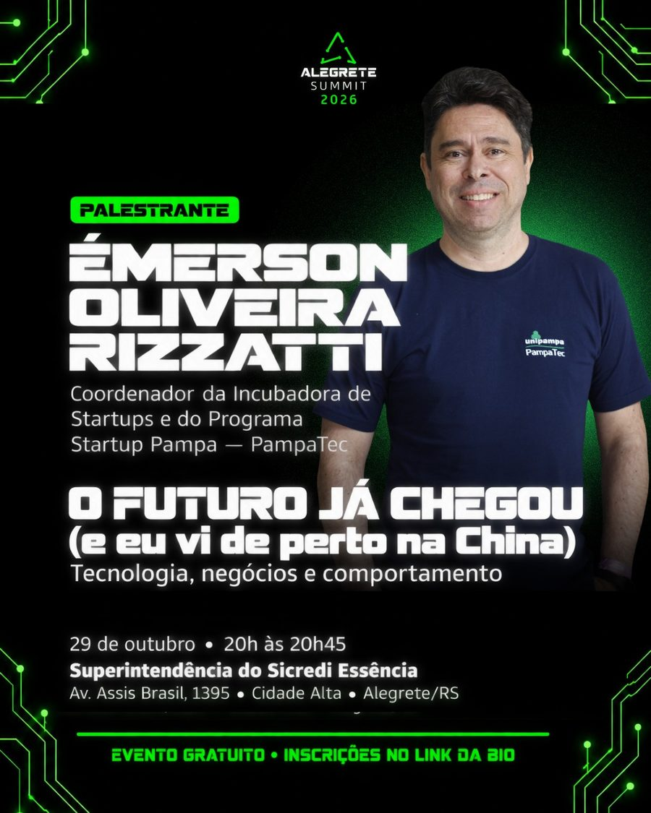
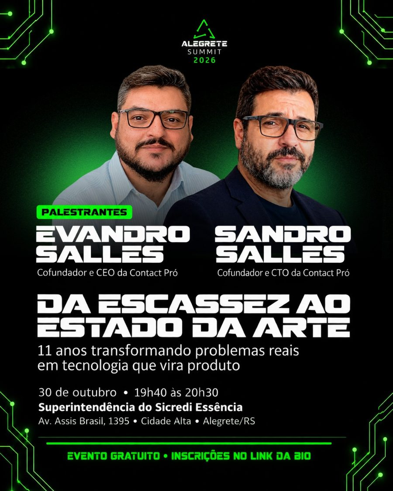
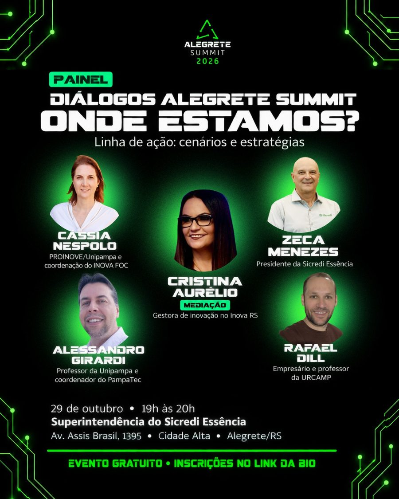

Entre quem produz e quem pesquisa
Aproximar o conhecimento das necessidades reais do território, conectando universidades, pesquisadores, produtores e empresas.
Inovar é construir pontes.
Dois dias de inovação, tecnologia, empreendedorismo e conexões entre quem produz, quem pesquisa, quem empreende e quem acredita no potencial do nosso território.
29 e 30 de outubro de 2026
A inovação não acontece de forma isolada. Ela cresce quando criamos conexões, compartilhamos experiências e reconhecemos a força que já existe no Pampa.
Aproximar o conhecimento das necessidades reais do território, conectando universidades, pesquisadores, produtores e empresas.
Levar quem tem uma ideia até quem pode ajudar a torná-la realidade, em encontros que geram negócios.
Reconhecer a força do agronegócio e aproximá-lo da tecnologia, da pesquisa e das novas soluções.
Tornar a inovação acessível para estudantes, empresários, produtores, empreendedores e toda a comunidade.
Valorizar o conhecimento que já existe no Pampa e conectá-lo às novas tecnologias.
A inteligência artificial atravessa todos os setores. Entenda como ela muda o ecossistema e como usá-la no nosso território.
Robótica, inteligência artificial, impressão 3D e outras experiências, com curadoria de Vitor Almada, do PampaTec. Dias 29 e 30, das 14h às 18h.
18 conversas curtas sobre carreira, comunicação, empreendedorismo, games e IA. Nos dois dias, das 9h às 18h.
13 equipes apresentam ideias de Edutech e de inovação tradicional em pitches de 3 minutos. As três melhores são premiadas. Dia 29, das 14h às 18h.
Um dia inteiro para transformar desafios do território em soluções, com premiação no fim da tarde. Dia 30, das 8h30 às 18h.
Onde estamos? Para onde vamos? Do Summit ao negócio. Três blocos com lideranças, a China vista de perto e cases alegretenses. Dia 29, a partir das 19h.
Contact Pró, Inovação Humanizada com Marcus Rossi (Gramado Summit) e a oficina Vídeo para Redes Sociais. Dia 30, a partir das 18h45.
À noite, no auditório, diálogos e palestras que conectam o território às transformações do mundo.




Estudantes, professores e pesquisadores que buscam conhecimento, experiências e oportunidades para transformar ideias em soluções.
Empreendedores, empresários, startups e investidores que querem ampliar conexões e encontrar caminhos para crescer.
Produtores rurais e profissionais do agronegócio que aproximam o conhecimento do campo das novas tecnologias.
Gestores públicos, instituições, lideranças e toda a comunidade que colabora para transformar o futuro do território.
A IA sem inovação perde o sentido. A inovação sem IA perde a velocidade. Preparamos um especial sobre o papel da inteligência artificial nos ecossistemas de inovação e no Pampa.

Em 2025, o Alegrete Summit reuniu pessoas, ideias e experiências que mostraram o que acontece quando o conhecimento encontra oportunidades: conversas que abriram conexões entre o campo, a cidade, a tecnologia e quem faz o nosso território acontecer.


Auditório da Superintendência do Sicredi Essência
Avenida Assis Brasil, 1395, Cidade Alta, Alegrete/RS
O evento é gratuito. A pré-inscrição ajuda a organização a conhecer quem vai participar e registra seus dados no sistema que emite os certificados, de até 24 horas, mediante participação nas atividades.
O link de pré-inscrição está na bio do @alegretecidadeinovadora.
Prefeitura de Alegrete · Sebrae · Sicredi
Inova RS Fronteira Oeste e Campanha · SEDETUR Alegrete · Centro Empresarial de Alegrete · Sindilojas RS (Alegrete e Manoel Viana) · PampaTec · Unipampa · IFFar Campus Alegrete · Fundação Maronna
Fernando: (55) 9 9949-7316 · Ruth: (51) 9 9229-0339